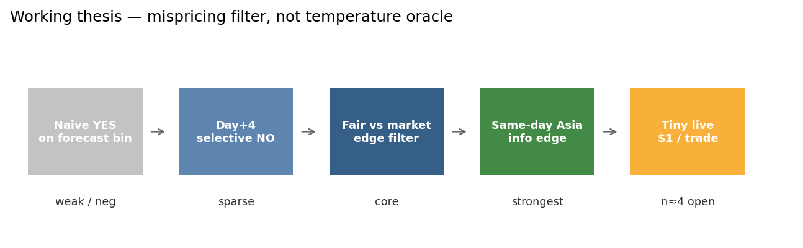
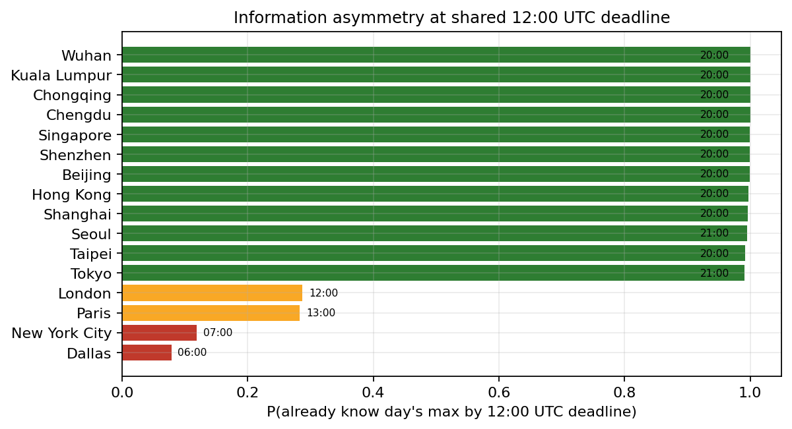
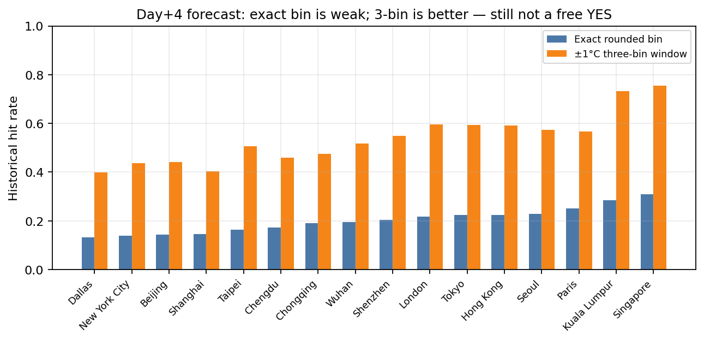
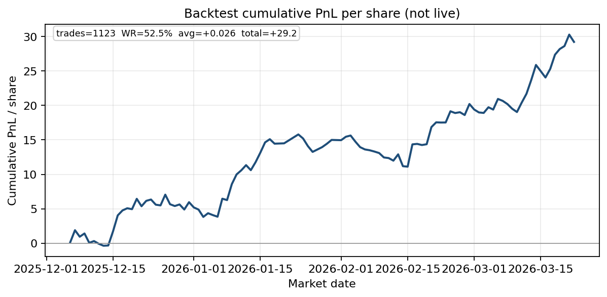
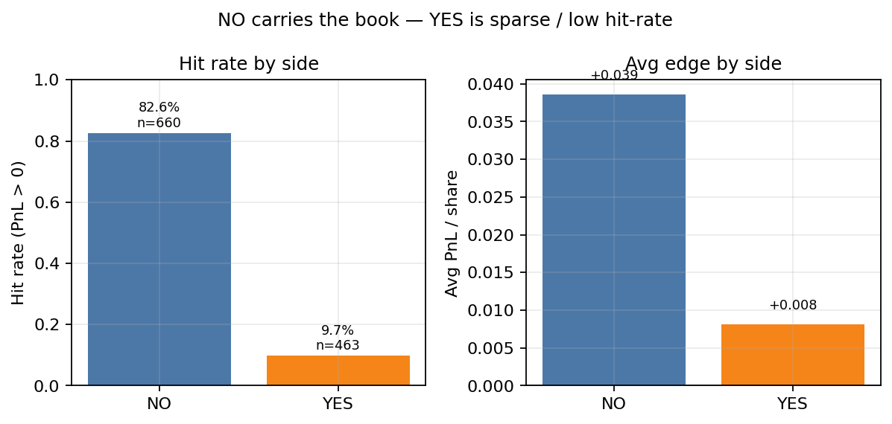
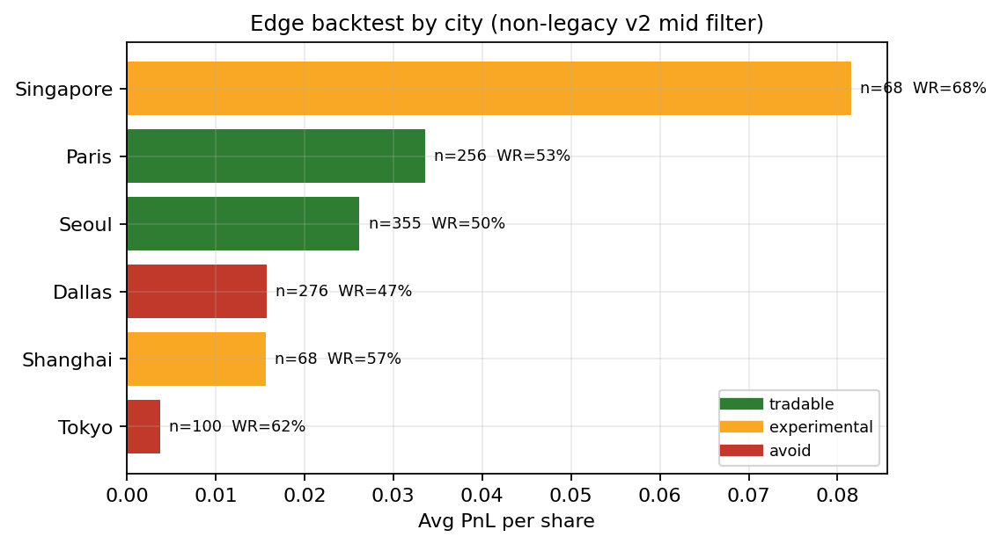
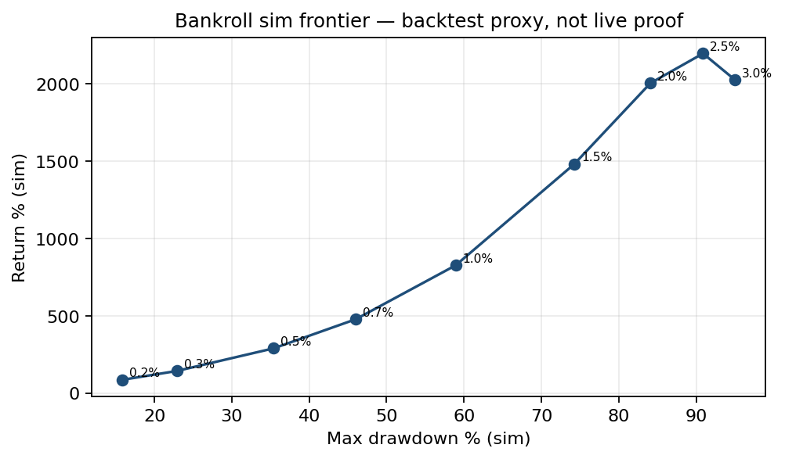

Author: ron1n97
Status: portfolio research write-up (curated extract
from a private lab)
Stack: Python, Open-Meteo / station history, Polymarket
CLOB weather buckets, paper + tiny-live loop
Code: this repository
I studied Polymarket daily max-temperature bucket markets as a mispricing problem, not a “predict the exact °C” problem. Fair probability is compared to market-implied probability; trades fire only when edge clears filters for sample size, liquidity, and regime.
Headline backtest (selected filter
non_legacy_v2_mid): 1,123 trades
· hit-rate 52.5% · avg +0.026
PnL/share · total +29.2 PnL/share units (2025-12-06 →
2026-03-22). The book is NO-heavy: bet no
hit-rate 82.6% / +0.039/share;
bet yes hit-rate 9.7% /
+0.008/share.
Live status: paper + $1 tiny-live on whitelist cities only. At note time the live journal had 4 open / 0 settled trades — not evidence of live alpha. Bankroll curves below are backtest simulations, same caveat as in the BTC research note.

Structural fact: the deadline is global, but local information at 12:00 UTC is not. In UTC+8/+9 cities the local day is already evening — today’s max is often nearly known. In US West it is still night.

That asymmetry is why same-day Asia sits at the top of the intended edge hierarchy — separate from day+4 forecast following.
Do not mix these into one rule set:
| Regime | Posture |
|---|---|
| Day+4 | Low confidence; sparse edges; mostly hunt overpriced center → selective NO |
| Day+1 / Day+2 | Better forecast quality; selective YES/NO |
| Same-day Asia (pre-12:00 UTC) | Strongest structural edge; use observed path, not just forecast |
Decision unit = Polymarket’s actual buckets (exact bin, 3-bin cluster, tail), with:
[ = - ]
Trade only when edge survives model-risk / spread / liquidity penalties.
Day+4 archived forecasts: exact rounded bin hit rates are low (often ~13–31% by city). A ±1°C three-bin window is much higher (~40–75%), but that still does not justify blindly buying the center cluster at market prices — crowd already piles into the obvious bins.

Practical implication: day+4 is not a broad long book; it may support selective NO / tail ideas when the center is overpriced.
Filter pack labeled non_legacy_v2_mid
(lab naming): mid thresholds on edge / sample, non-legacy market
set.
| Metric | Value |
|---|---|
| Trades | 1,123 |
| Hit-rate (PnL > 0) | 52.5% |
| Avg PnL / share | +0.026 |
| Total PnL / share | +29.2 |
| Date span | 2025-12-06 → 2026-03-22 |
| Side mix | 660 NO / 463 YES |


City view (same backtest) drives the live whitelist:
| City | Tier | Trades | Avg PnL/share | Hit-rate |
|---|---|---|---|---|
| Singapore | experimental | 68 | +0.082 | 67.6% |
| Paris | tradable | 256 | +0.034 | 52.7% |
| Seoul | tradable | 355 | +0.026 | 49.9% |
| Dallas | avoid | 276 | +0.016 | 47.5% |
| Shanghai | experimental | 68 | +0.016 | 57.4% |
| Tokyo | avoid | 100 | +0.004 | 62.0% |
Seoul/Paris earn tradable on sample + stability, not peak raw avg. Singapore looks hot but thin → experimental. Dallas/Tokyo deprioritized.

From live_policy_v1.md / city_whitelist_v1.md:
At write-up time: 4 open, 0 settled, $0 realized live PnL. Treat live as process validation, not performance.
Fractional Kelly-style sweeps on the same 1,123-trade path (start $50) show the usual return / drawdown frontier. Useful for sizing intuition; not a claim about live compounding.

Example: fraction 0.2% → ~+86% sim return / ~16% max DD; fraction 2% → large sim return with ~84% max DD. Live stays at $1.
Is: curated research note, sanitized result tables, figures, strategy/policy docs, and the scripts that build the daily paper cycle / edge backtests.
Is not: a dump of raw data/, full
outputs/ archives, API keys, wallet state, or a claim of
production alpha.
Private lab remains local; this is the public extract.
python -m venv .venv && source .venv/bin/activate
pip install -r requirements.txt
python scripts/make_figures.pyFull daily paper cycle needs local market/forecast fetches (see
README). Result CSVs under results/ are enough to
regenerate the note figures.